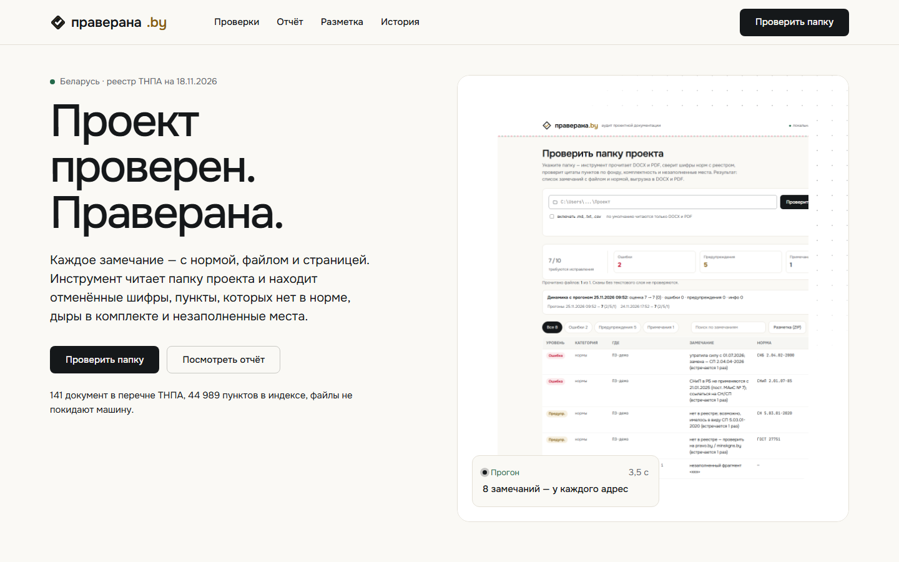
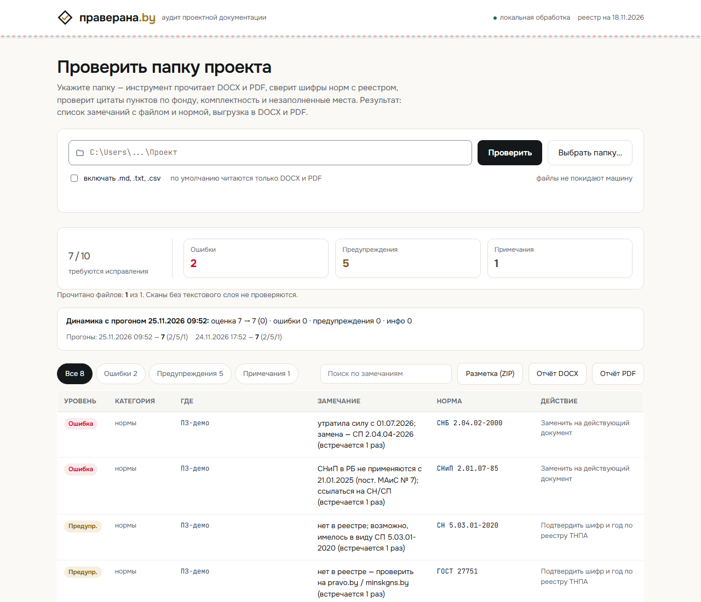
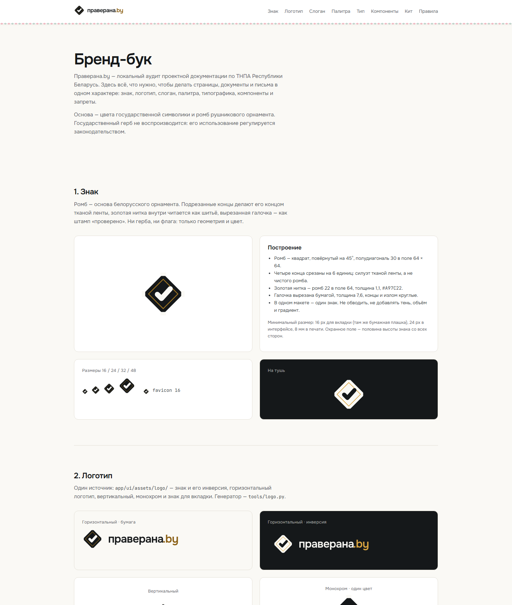
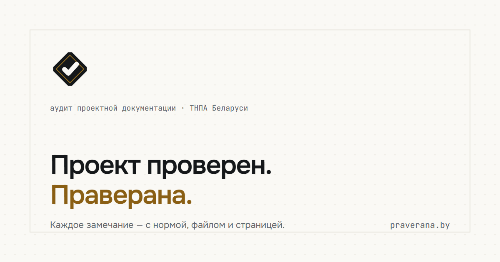
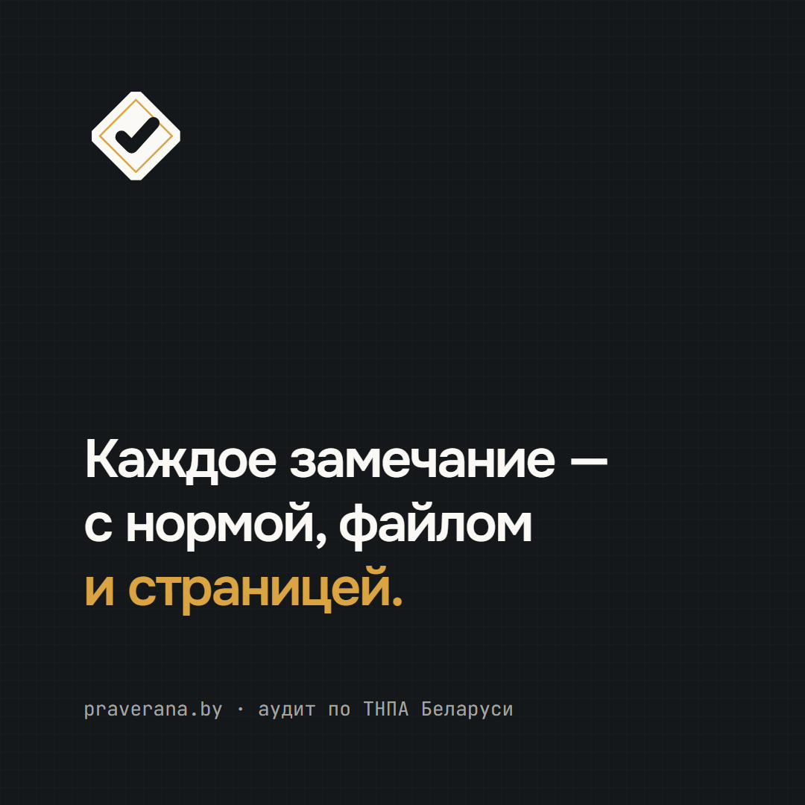

Дизайн на просмотр
Всё, что собрано: знак, палитра, тип, компоненты, иконки и экраны. Смотреть по порядку, замечания — в issues. Каждый блок кликабелен там, где это живой экран.
1. Знак и логотип
Ромб с подрезанными концами — конец тканой ленты, золотая нитка внутри — шитьё, вырезанная галочка — штамп «проверено». Знак читается с 16 px и держит детали на 96 px.
Знак 96 px
Размеры 16 / 24 / 32 / 48
Монохром
Горизонтальный · бумага
Горизонтальный · инверсия
2. Палитра
Тушь
#15181A · 16,93:1
Бумага
#FAF9F5 · фон
Вторичный
#5D666B · 5,57:1
Золото текстом
#8A5F14 · 5,35:1
Золото графикой
#A97C22
Красный · ошибка
#C8102E · 5,58:1
Зелёный
#23694A · 6,25:1
Нейтраль · примечание
#3A4A5A · 8,64:1
3. Типографика
Проверка проекта
Раздел и подзаголовок
Основной текст: пятнадцать пикселей,
интерлиньяж 1,5–1,6, до 65 знаков в строке. Onest — интерфейс, JetBrains Mono — шифры и пути.
СН 1.03.04-2020 · п. 7.7 · фрагм. 12
4. Компоненты
Кнопки
Проверить папку
Выбрать папку…
Поле
C:\Проекты\АТЛАС
Уровни
ОшибкаПредупреждение
Примечание
Покрытие
Прочитано файлов: 7 из 174.
Пропущено без чтения: 164. Сканы без текстового слоя не проверяются.
Строка замечания
| Уровень | Категория | Где | Замечание | Норма |
|---|---|---|---|---|
| Ошибка | нормы | ПЗ-демо.docx, фрагм. 1 | утратила силу с 01.07.2026; замена — СП 2.04.04-2026 | СНБ 2.04.02-2000 |
| Предупр. | заглушки | ПЗ-демо.docx, фрагм. 1 | незаполненный фрагмент «___» | — |
5. Иконки
Нормы
Пункт
Комплект
ПОС и ППР
Заглушки
Отчёт
Разметка
История
Проверено
6. Экраны
Лендинг →

Инструмент →

Бренд-бук →

Превью ссылки 1200 × 630

Соцкарточка 1080 × 1080

7. Что решить вам
- Оценка /10 в шапке отчёта: оставить как внутреннюю метрику или убрать из выдачи заказчику (#19).
- Орнамент: тонкая полоса ромбов под шапкой — оставить, убрать или сделать только в документах.
- Знак: обновлён — ромб с подрезанными концами, золотая нитка, вырезанная галочка. Утверждаем или пробуем ещё вариант?
- Слоган: «Каждое замечание — с нормой, файлом и страницей» — принимаем как основной.
- Health: 100 из 100, «strong» — все проверки пройдены (#24). Порог 95 взят.